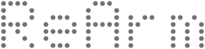
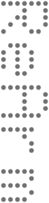

brand/rearm-wordmark.svg · 颜色随 currentColor
品牌与界面规范 · v1.0 · 2026-11-14
这一页是海报和前端之间的翻译词典。颜色、字体、圆角都写在 /static/tokens.css 里，本页直接引用那份文件，所以页面上看到的就是代码里的值。海报没有源文件，Logo 和色值是按海报重新绘制、取样定下的；以后拿到设计稿，只改 tokens.css 和 /static/brand/ 里的 SVG。
A · 从海报提取
Logo
主 Logo 是粗体字标。点阵版是辅助标志，只出现在品牌位、封面、加载页和路演开场，不进入日常操作界面。两版都是矢量路径，不依赖字体。
主 Logo · 字标 · 深色底
主 Logo · 字标 · 白底
墨黑
#212121，不用纯黑
辅助 · 点阵横排

brand/rearm-dotmatrix.svg · 5×7 点阵，点灰 #737373
辅助 · 点阵竖排 / 图标 / “+”
竖排用于海报式版面；方形图标用于网页图标和应用图标

最小尺寸字标屏幕上高度不小于 14px；点阵版不小于 40px 宽，再小点会糊成一片。
留白四周至少留一个“e”的宽度。顶栏里字标高 16px，左右留 12px。
配中文“日新臂”用思源黑体 Bold，与字标同高或略小，放字标右侧或下方。
不要 拉伸变形、加彩色或渐变、加阴影和发光、把点阵版当正文标题、在照片杂乱处直接压 Logo。
A + B · 品牌原色与功能色
颜色
品牌只有黑、白、灰，没有彩色主色。主操作和选中态用“反白”表达（白底黑字、白色下划线）。彩色只给状态用，而且必须配文字或形状。
品牌原色（海报取样）
墨黑--brand-ink · #212121海报标题
纸白--brand-paper · #fdfdfd海报底色
雾灰--brand-mist · #eaebed海报灰圆
点阵灰--brand-dot · #737373竖排点阵字
功能色（为界面新定）
成功 / 正常--ok · #3ecf8e在范围内、已连接、完成
警告 / 进行中--warn · #f2a93b运行中、接近限位、模拟数据
错误 / 急停--bad · #ff5d5d急停按钮实底用 --estop #d92d2d
键盘焦点--focus · #7aaef8只画焦点框，不做装饰
图表专用
曲线默认用 --data（纸白，画面里最亮）。对比两条线时，实测用 --obs ，预测用 --pred 。这两个颜色不拿去做按钮、标签或边框。
B · 深色模式的翻译规则
海报白底 → 控制台黑底
海报是白底黑字，控制台是黑底白字。按下表对应，层级只靠明度区分，不用渐变、不用阴影分层。
| 海报里 | 控制台里 | 变量 | 值 |
|---|---|---|---|
| 墨黑（文字） | 页面背景 | --bg | #08090a |
| 灰圆 | 面板、卡片底色 | --panel / --panel2 | #0e0f11 / #141618 |
| 纸白（底色） | 正文文字 | --text | #eaebed |
| 纸白 | 数据、曲线、读数（最亮） | --data | #fdfdfd |
| 点阵灰 | 次要文字、单位、标签 | --sub / --mute | #a5a8ad / #8b8f95 |
| 灰圆描边 | 分隔线、边框 | --line / --line2 | #1d2023 / #2c3034 |
| 黑字 | 主按钮、选中态（反白） | --accent / --on-accent | #eaebed / #212121 |
路演模式（html[data-mode="show"]）把线条和数据再提亮一级，保证会场最后一排看得见。
A + B · 品牌字体与界面字体
字体
展示 · --display
ReArm 日新臂
英文 Montserrat Bold，中文思源黑体 Bold。只用于标题、封面、路演大字。都是 SIL OFL 授权，可免费商用。正文 · --sans
关节 3 接近限位，已自动降速。
跟随系统字体（苹方 / 微软雅黑），界面里所有文字默认用它。数字 · --mono
−12.48mm
读数、坐标、编号一律等宽，单位小一号、颜色更淡。| 变量 | 字号 | 用在哪 |
|---|---|---|
| --fs-2xs / xs | 10 / 11px | 刻度、小标签（大写加字距 --tracking-label） |
| --fs-sm / base | 12 / 13px | 表格、正文、按钮 |
| --fs-md / lg | 14 / 15px | 卡片里的主要文字、提示条 |
| --fs-xl / 2xl | 17 / 19px | 页面标题、滑块读数 |
| --fs-kpi | 22px | 数据格大数字 |
B · 图标库
图标：Lucide
统一用 Lucide（MIT 授权）。线宽 1.5，界面里 16px，工具栏 20px，颜色跟文字走（currentColor）。不混用其他图标库，不用表情符号当图标。状态图标和状态色成对出现。
play
pause
square
rotate-ccw
crosshair
camera
circle-check
triangle-alert
octagon-x
B · 基础组件规则
组件
按钮
- 主按钮反白实底，一屏最多一个。
- 次按钮细线描边，透明底。幽灵按钮用于取消、关闭。
- 危险按钮红色描边，点击后要二次确认。
急停
- 全界面唯一的红色实底按钮，固定在顶栏右侧，任何页面都在同一位置。
- 高 48px，比其他按钮都大；文字加字距，配八边形图标。
- 不做悬停变色以外的动效，不被任何浮层遮住。
状态标签
已连接
训练中
超限
当前
待命
颜色 + 图标 + 文字三重表达，色弱也能分清。标签只描边不铺底色，圆角 2px。
滑块与输入
滑块是 2px 细轨 + 竖条游标，不用圆形把手；读数等宽、单位小一号。输入框和按钮同高 32px。
关节读数J1–J3
J112.4°
J2−37.0°
J388.6°
卡片
- 面板底色
--panel，1px--line边框，圆角 3px，没有阴影。 - 标题是小号大写加字距的标签，前面一个 6px 空心方块，下面一条细线；没有填色的标题条。
- 内边距 14px（
--pad），卡片之间 12px（--gap）。 - 数据格之间用 1px 细线分开，不各自加边框。
B · 间距与圆角
间距与圆角
间距都是 4 的倍数。圆角整体偏小，让界面像仪器而不像手机应用。
间距 --sp-1 … --sp-6
4
8
12
16
24
32
圆角
2 · 标签
3 · 按钮卡片
6 · 弹窗
圆 · 状态点
海报原样 · data-tone="paper"
路演白底
加载页、封面和路演开场可以直接用海报的样子：纸白底、灰圆、墨黑大字。在任意容器上加 data-tone="paper"，里面所有变量自动换成白底值，组件不用改。
给开发
开发怎么用
- 页面只用第二层语义变量（
--bg--text--ok…），不直接用--brand-*，更不写十六进制色值。 - 旧变量名
--cyan等于--ok，--accent-2是主按钮悬停色，都还能用，新代码用新名字。 - 数字孪生的配色在
modules/theme/theme.css的--twin-*，跟实物一样是中性灰。 - 字体文件还没打包：上线前把 Montserrat 和思源黑体（Noto Sans SC）的 woff2 放进
/static/fonts/，在 tokens.css 加@font-face。没装时会退回 Avenir Next / 苹方，不影响使用。 - 目前 CSS 和 JS 里还有约 90 处写死的颜色，下一步按这页逐个换成变量。